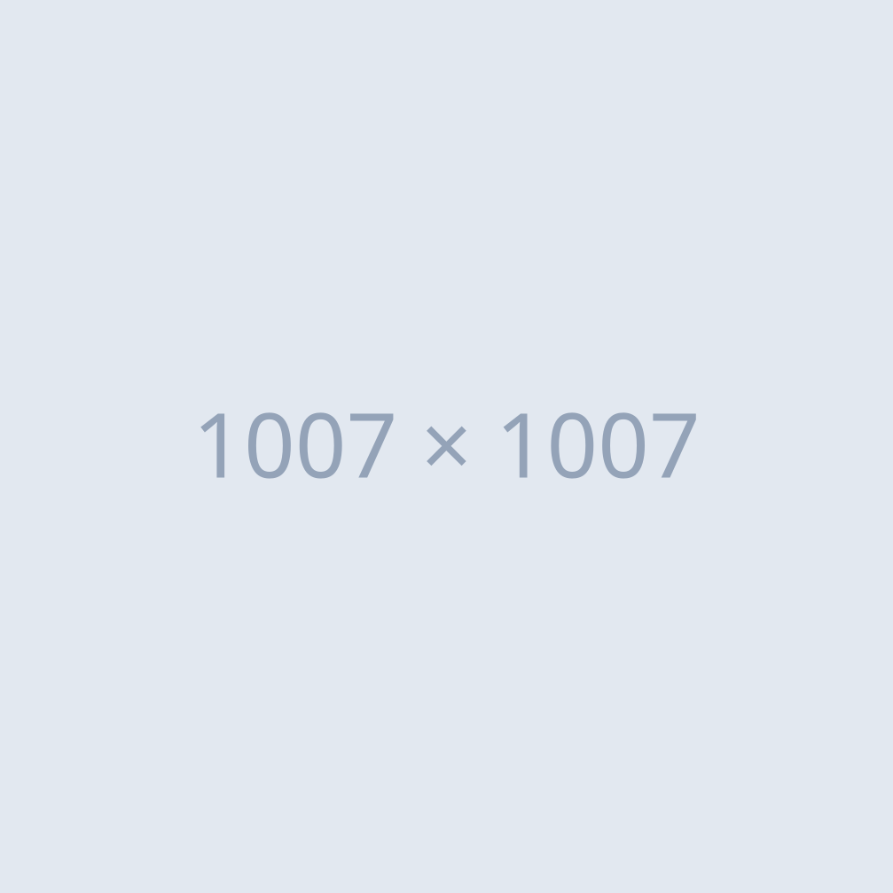

Completed 2025

Custom homes, kitchens, clinics and a 1924 Main Street building. Fourteen jobs are on site right now.
Selected Work
Completed 2025
In progress

Completed 2025

Completed 2026
In progress

In progress
Completed 2024

Completed 2026
Completed 2024
Where We Build
Homes and renovations in four counties; commercial and restoration work further out across Middle Tennessee.
Tell us the address and roughly when. We call back within one business day.